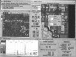
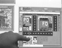
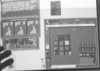
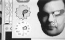

Video Tape Transcript of Toronto Usenix Symposium Keynote Address
This is a transcript of a video taped keynote address in absentia,
for the Toronto Usenix Symposium. The normal text is Don
Hopkins talking. The (parenthetcal italic text) is extra annotation
and explanation that's not on the video tape.
-- Beginning of Video Tape --
Hello, my name is Don Hopkins, and I ported SimCity
to Unix on top of X11 using the TCL/Tk
toolkit, and also on top of the NeWS window
system using HyperLook. Unfortunately
I can't be in Toronto to demonstrate this stuff to you, but fortunately
I have some video tapes that you can see that demonstrate the whole system.

The X11 version of SimCity is multi player, and several people can join
the game, and cooperate, and people draw roads, and put down buildings in
different places, and then when you do something important, like change
the tax rate, or build an airport, you have to get everybody else who's
playing to agree where to put it, and which thing to put down. So it makes
you slow down and rationalize what you're doing, and explain to people why
it is you want to put it there. It's a really interesting addition to SimCity
because it adds politics.

I'm going to show first the X11 version, which is on top of TCL/Tk,
and that's a free toolkit that's available, written by John Ousterhaut at
Berkeley. There's a book that's coming out describing it, and you can just
get TCL/Tk and use it to make products for free. You don't have to pay anything
for it, and it's actually very good code. It really beats the pants off
of Motif, and we were
able to modify it in order to support things like colormaps and multiple
displays the way we needed to, and add things to it like a sound server
to make sound effects, and pie menus for quickly selecting city editing
tools. TCL/Tk made alot of sense for SimCity.

The first port of SimCity that I did to Unix is on HyperLook, which is an
interactive graphical environment based on NeWS. We took the source code
to SimCity for the Mac, and I threw away all the user interface code written
in C, and just took the core simulator, and then rewrote the user interface
using HyperLook, which is this direct manipulation graphical environment,
kind of like HyperCard, where you can take pictures and paste them in to
define the look, and then every object has a script on it that in HyperLook,
the script is PostScript, which defines its behavior.

So you just create a user interface by drawing it, and then hook it up to
the application, and that user interface is separated from the application,
and they send messages back and forth. Now this separation of the user interface
from the application is really important, and that made it much easier later
to port SimCity to X11.
HyperLook has this scripting language in it, and TCL/Tk has the TCL scripting
language in it, so I was able to translate the things I had written in PostScript
into TCL, and have a very similar structure. It makes it much easier to
develop a thing as complex as SimCity if you have an interpretive programming
language there, so you can just fiddle around, and paste new function definitions
into the running system.
There are some user interface editors that have been developed for TCL/Tk,
but I just wrote code by hand because I was doing some more specialized
things, like multiple views and putting up views on different X11 displays
over the net, that the user interface editors didn't support. HyperLook
has a built in user interface editor, and I'll demonstrate HyperLook SimCity
and the HyperLook environment in the following video tape.

The X11 version of SimCity supports multi player, so you can add several
people to the same game, and it connects up like an octopus, several X11
displays connected to one X11 client. You can cooperate on these important
decisions like setting taxes and building airports. Everybody's participating
in the same game and lives with the consequences of each others actions,
so now you have politics in the game. There are some tools for communicating
and drawing on the map, and seeing what other people are doing.

Unix was very good for porting SimCity
because it's a very good programming environment. It's very difficult and
lacking in multimedia things like the sound, and just doing animation easily.
I had to create alot of things that didn't exist before, that other people
are independantly working on creating too. That stuff is slowly fading into
view, like for example there's the NetAudio server now that lets two programs
make sounds at once, it just mixes them together.
SimCity wants to go "Roar!", "Roar!", "Kaboom!",
and my email program wants to go "dinga linga linga ling" at the
same time, so you have to have one program handling the sound that mixes
them.
One of the things I developed for TCL/Tk and for HyperLook was this sound
mixer server. And then we got an NCD X-Terminal, and just layered my sound
mixer on top of their sound server. It can either use the built-in audio
device and be a TCL sound server, or it can use the sound server that's
in your X-Terminal or your Sun or SGI or whatever, if you're running NetAudio.
There are some other hard problems to solve like the bitmap animation. X
has some extensions like shared memory, that make it easy to animate, but
you can't depend on it, and some peoples servers don't have quite the whole
shared memory extension. It's just a pretty frightening prospect just trying
to write pixels onto the screen. You have to deal with about 50 different
possible combinations of different display devices, and different ways of
getting to that display device.
It's very difficult programming this stuff under X.
It was alot more fun doing it in NeWS. We had to give up alot of the neat
graphical features for the X version that we had in the NeWS version, like
scaling and zooming around. You just can't do that in X. Unfortunately,
NeWS is dead. There's no longer any support for it. The thing that was really
wrong with it was that it was not cross platform. You were just stuck on
Suns.


The good news though is that there are much better systems, I'm working
on one right now at Kaleida called ScriptX,
that are cross platform. Their whole purpose in life is to provide you a
really nice high level abstraction, that lets you ignore which operating
system you're running on, so instead of developing for Unix, or for MS-DOS,
or for the Mac, you would develop for ScriptX, and that would get you to
Unix, and the Mac, and MS-DOS. More interestingly, that would get you to
things that don't exist yet, that are just coming into existance, things
like set top boxes with really hot graphics, and nicer systems than you're
currently even dreaming about.

What we need are high level multimedia abstractions; the X graphics model
is very low level, and just doesn't work, but the NeWS PostScript graphics
model is really nice, but we want the best of both worlds: a high level
system that runs fast on lots of platforms. Once we have a truely object
oriented system, things start plugging and playing like Legos, as this video
tape of the HyperLook system will demonstrate.
The good news is that in the future, we will have systems like this that
plug and play with each other over the network, and it won't matter what
kind of hardware you're using. And that'll be in the hands of consumers
too, it won't be just for Unix weenies.
I will show you a video tape of a talk that I gave at Interval,
about "Self Revealing Gestural Interfaces", which is computer
jargon for "pie menus". That
is a thing that I put into both version of SimCity that lets you select
editing tools really quickly.

One of the nice things about running on a fast platform, is that SimCity
runs really fast, and now it's a question of keeping up with the simulator.
You need a streamlined user interface in order to keep up with this city
that's zooming years into the future at you sit. That's what the pie menus
are for, and I'll demonstrate that.
For the pie menus and the multi player interaction stuff, like putting up
windows on different screens and letting people have a shared view of this
one environment, it was really nice to have the source code to the TCL/Tk
toolkit, in order to support that kind of stuff.
It wouldn't have been possible to port SimCity to X11 using Open
Software Foundation's Motif toolkit. It just absolutely sucks. It's
not open, and you have to pay for the source code, and it's not being maintained.
But there's a really wonderful community that's grown around TCL/Tk, and
people are allowed to use it in their products for free, and get the source
code. I implemented pie menus with TCL/Tk for SimCity, and out of gratitude,
I put the source code for the pie menu module out for other people to use,
just to help to community. It's a nice positive feedback situation, as opposed
to the cold war situation you have with COSE, Motif, and Open Software Foundation.
We bundled the HyperLook runtime system
with the NeWS version of SimCity.
If you're running OpenWindows 3.0, you can get it and try it out.

We have been distributing
SimCity over the Internet, and (less successfully) on CDROMs.
That's possible because Unix systems have serial numbers, so we can node
lock SimCity, and you can run the program for five minutes if you don't
have a license, and then it melts, so you get the whole feel of the whole
full blown product, and if you like it, then you call up DUX
Software's 800 number, give them your credit card number, tell them
your serial number, and they tell you a password to type in that will unlock
it for your particular machine, then you're up and playing SimCity. No physical
transaction has taken place. You're encouraged to get a copy of it over
the net, and give it to your friends.
This is the best way to distribute software. Whenever we make updates, we
can just put them right online, and people can just grab a new copy. I think
that's the future of software distribution. I don't like the little boxes
with plastic insets and little pieces of cardboard folded up to make then
seem heavier and thicker. The instant gratification of distributing it over
the net is really great.
Well, anyway, here's the talk, and the video tapes.
-- End of Video Tape --